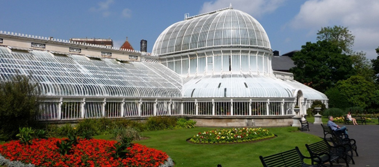
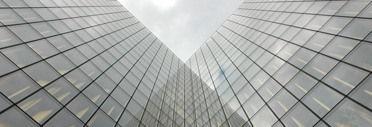

Tunneling design and construction techniques
Methods of tunneling vary with the nature of the material to be cut through. When soft earth is encountered, the excavation is timbered for support as the work advances; the timbers are sometimes left as a permanent lining for the tunnel.
Another method is to cut two parallel excavations in which the side walls are constructed first. Arches c onnecting them are then built as the material between them is extracted.
Gardens of Eden showcase
{kind=link}
Choosing the garden mystical location
A garden is a planned space, usually outdoors, set aside for the display, cultivation, and enjoyment of plants and other forms of nature. The garden can incorporate both natural and man-made materials. The most common form is known as a residential garden.
Some traditional types of eastern gardens, such as Zen gardens, use plants such as parsley.
A great example of futuristic architecture: Golden Works Headquarters at a glance!
{kind=link}
Turning a dream into reality
Methods of tunneling vary with the nature of the material to be cut through. When soft earth is encountered, the excavation is timbered for support as the work advances; the timbers are sometimes left as a permanent lining for the tunnel.
Another method is to cut two parallel excavations in which the side walls are constructed first. Arches connecting them are then built as the material between them is extracted.
Deciding factors when choosing a project location
Geotechnical engineers perform geotechnical investigations to obtain information on the physical properties of soil and rock underlying (and sometimes adjacent to) a site to design earthworks and foundations for proposed structures, and for repair of distress to earthworks and structures caused by subsurface conditions.
Geothechnical implications
Geotechnical engineering is the branch of civil engineering concerned with the engineering behavior of earth materials.
Geotechnical engineering is the branch of civil engineering concerned with the engineering behavior of earth materials.